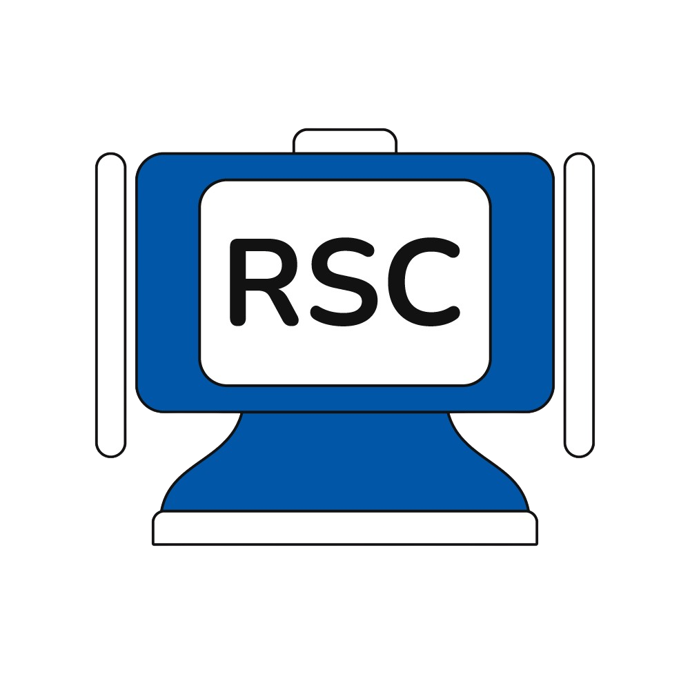

Designing Social Robots for Human Interaction
The intersection of humans and robots has become increasingly critical as society integrates robotics into everyday life. This course offers an in-depth exploration of social robotics, focusing on the design, development, and study of robots that interact and communicate in socially meaningful ways.
Participants will explore robot design, ethical considerations, and real-world applications through hands-on experience with robotic platforms, including the Robot Study Companion (RSC).
📅 Applications open until 20 April
Apply via University of Tartu →
This course introduces foundational principles of human-robot interaction (HRI), with a focus on social robotics in education. Through lectures, workshops, and group work, students will:
The course combines theory with practical, multidisciplinary approaches, exploring the societal impact of robotics and AI.
Farnaz Baksh
Junior Research Fellow, University of Tartu
Leads development of the open-source Robot Study Companion for multimodal human-robot interaction.
Matevž Borjan Zorec
Junior Research Fellow, University of Tartu
Works on IoT, AI, and robotics systems; co-developer of the RSC platform.
Karl Kruusamäe
Professor of Human-Centred Robotics, University of Tartu
Research focuses on human-robot collaboration and educational robotics.
Note: Final schedule will be shared with participants before the course begins.
Students will work in teams to develop a robot prototype addressing a real-world challenge, culminating in a presentation and report, with potential for academic publication.
This page will be updated with student projects, photos, videos, and open-source contributions developed during the course.